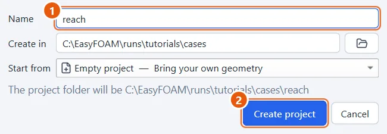
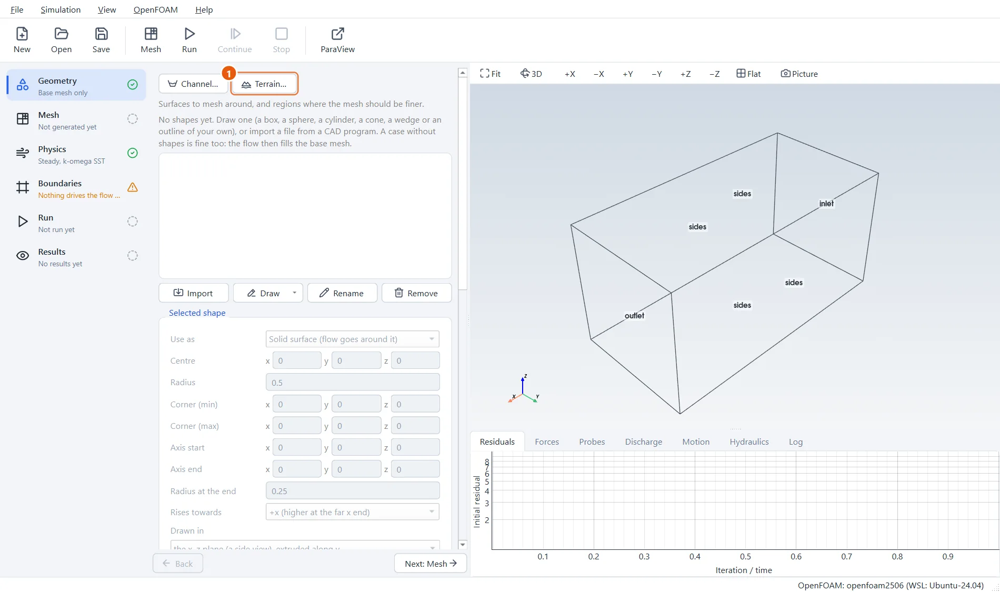
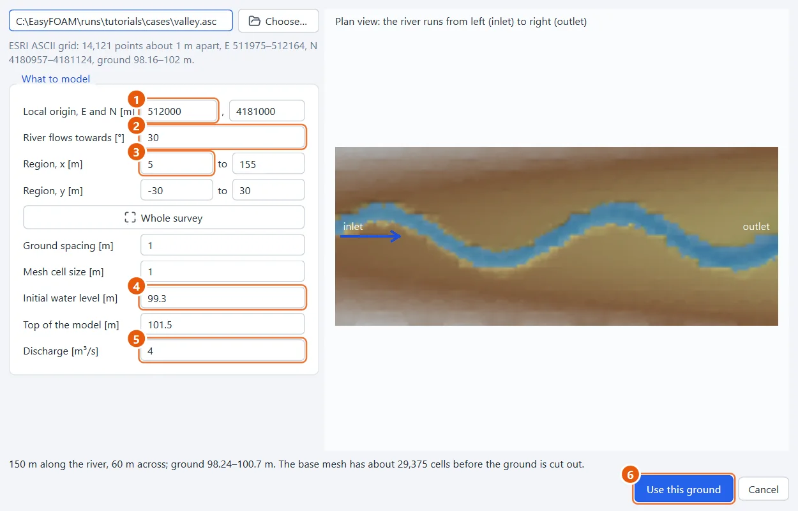
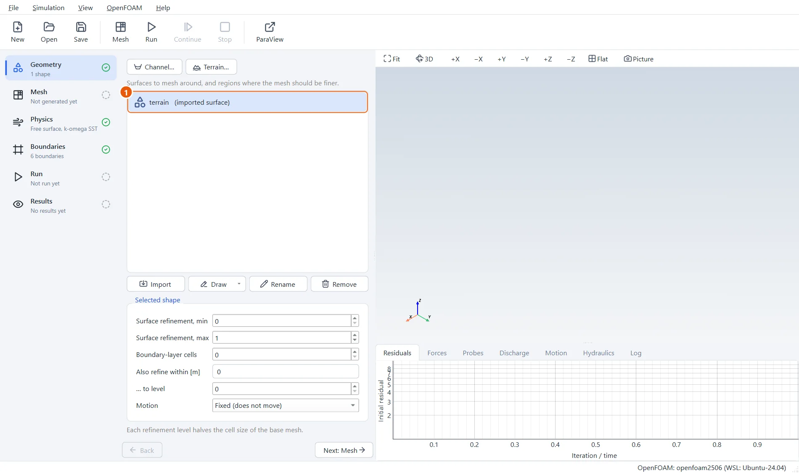
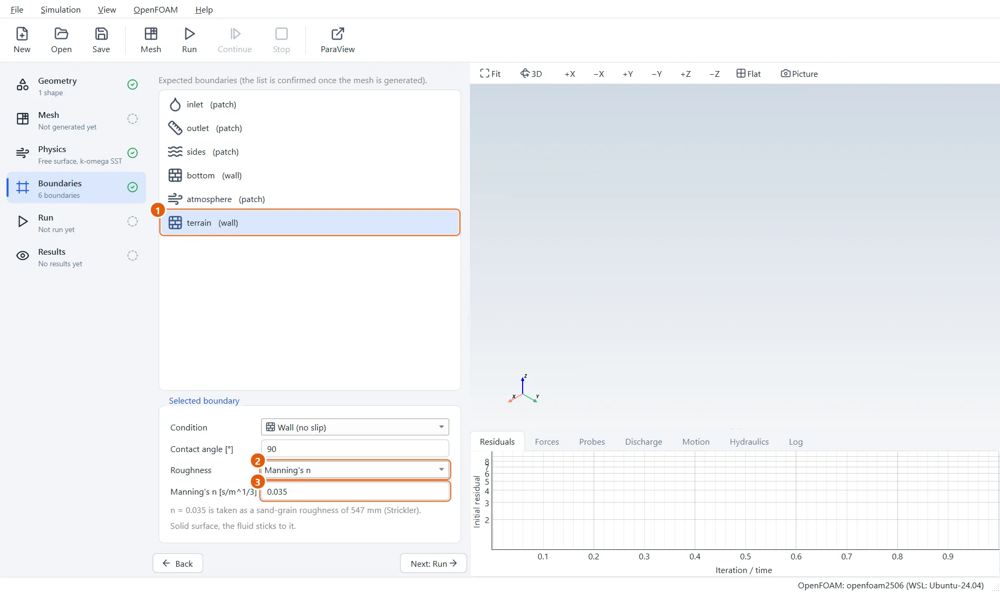
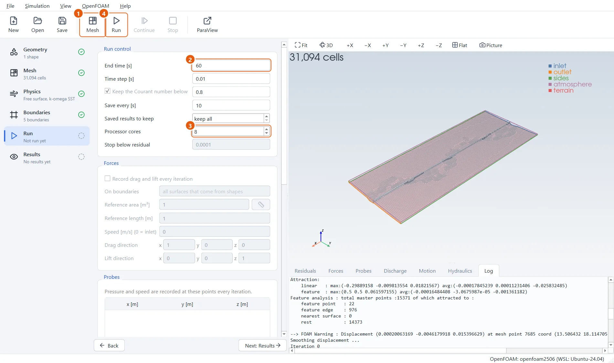
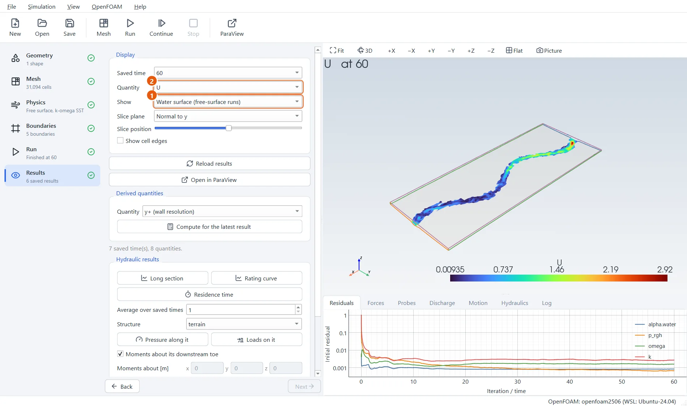
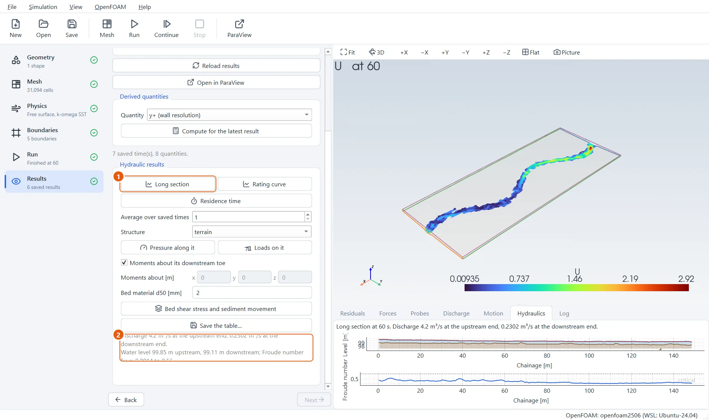

Tutorial 17 of 17
A river reach from a survey
Bring in the ground of a valley from an ESRI ASCII grid, turn it so the river runs along x, and send a flow down its meandering channel.
River models start from the ground: a survey, a lidar grid or a terrain model. EasyFOAM reads XYZ points, ESRI ASCII grids, GeoTIFF elevation rasters and LandXML surfaces, moves them to small local coordinates, turns them so the river runs along x and closes the ground into a solid that the mesh is cut from. The water and the air are above it.
In this tutorial you use a survey of a small valley, 150 m long, with a meandering channel about 1.2 m deep. Download it here: valley.asc. Its coordinates are survey coordinates, half a million metres east and four million north.
What you will learn
- read a survey file and see what it holds
- choose the local origin, the direction of the river and the part to model
- give the ground a Manning roughness
- run the flow and draw the long section of the reach
Computer time: about a minute for the mesh and a minute for the run, on eight cores.
1An empty project
Start a new, empty project and call it reach.
- Type
reach. - Click Create project.


2Bring in the ground
In the Geometry step, press Terrain… and choose the file valley.asc.
- Press Terrain….


3Where and what to model
The dialog says what the file holds: a 1 m grid, ground from 98.2 to 102 m. Put the local origin where the valley starts, at 512000, 4181000, and say the river flows 30° north of east: the survey is turned so that it runs along x. Model 5 to 155 m along it and 30 m to each side. The water starts at 99.3 m, which fills the channel, and 4 m³/s come in.
- Local origin:
512000,4181000. - River flows towards:
30degrees. - Region: x
5to155, y-30to30. - Initial water level:
99.3m. - Discharge:
4m³/s. - Press Use this ground.


4The ground
The ground is now a shape called terrain, and the case is set up: the base mesh sits on the ground with its top at 101.5 m, the inlet faces -x, the outlet +x holds the water at 99.3 m, and the sides let the water slide.
- The shape terrain: the ground, closed into a solid.


5A rough bed
A natural channel with some stones and weeds: give the ground a Manning's n of 0.035.
- The boundary terrain.
- Roughness: Manning's n.
- Manning's n:
0.035.


6Mesh and run
snappyHexMesh cuts the ground out of the base mesh and refines once at it. Then run a minute of flow on eight cores: long enough for the water to run the length of the reach.
- Click Mesh in the toolbar (or press F5).
- End time:
60s. - Processor cores:
8. - Click Run in the toolbar (or press F6).


7The river
The Results step shows the water surface coloured by speed: the water winds round the meanders, faster on the outside of the bends.
- Show: Water surface.
- Quantity:
U.


8Long section of the reach
Long section integrates the water across the valley at stations along x. The water surface falls along the reach, the discharge settles towards the 4 m³/s let in, and the Froude number says the flow is slow and deep (subcritical).
- Press Long section.
- Discharge, depth and Froude number along the reach.

